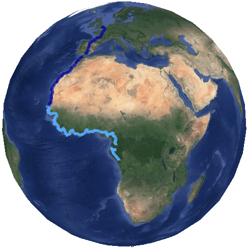
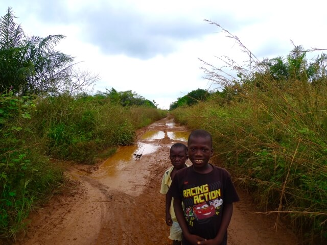
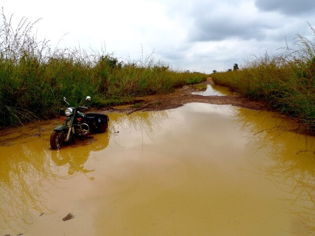
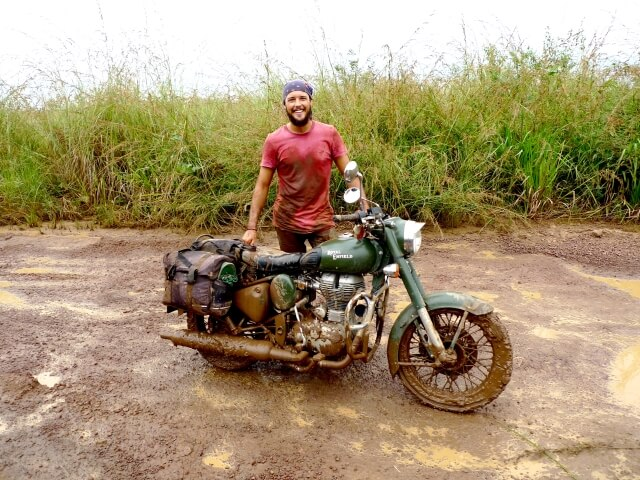

Congo, AFRICA
Worst road of the trip...
(11 minute read)
...Ahhhhh, shit...
Hello, Congo.
It doesn’t even sound like a country. It sounds more like a mythical, made up place.
“The Congo...”
There's no more evocative a name anywhere on the continent...
I'm not sure about this. But, what else am I going to do?
The border post in is a pain in the arse, but I get all the stuff I need over the space of about an hour.
I’m about to head off but one of the cops is trying to explain something to me.
My French isn’t really good enough to catch it... He’s talking about a path, or something to do with listening. I’ve got no idea what he’s driving at...
I apologise and ask him to repeat himself - and he does - but it’s in one ear and out the other. I can’t catch any of it, which is a shame because he seems pretty earnest about it...
I apologise again and he wishes me good luck and I'm off.
I round the first corner, and straight away I'm faced with a very long puddle...
Fucking hell... It just keeps going.
I spend a good minute with the bike in idle, hand on the clutch, just staring at it, because I can’t do anything else...
I don't think I can do it.
It’s too big.
Something tells me it's deep. I can just tell.
Hopeless...
The road is lined with African scrub so thick that I’m no chance to bush bash around it. And even if I could, there’d probably be mud under that too...
The dry scrub is higher than my head. Like a stone wall....
The nearest other road is two hundred kilometres away.
This is it. For the next two hundred clicks: this...
What the fuck am I supposed to do now?
Nothing else for it but to have a crack. I guess... What else can I do?
Before I have the chance, two kids from the border village have come running and jumping and screaming out of the scrub.
They're waving for me to follow them into the scrub.
They sherpa me off to the side where there’s a tiny, hidden bypass track.
Thank Christ.
I scratch the Shrike through the scrub, and pop out into what looks like the front yard of someone’s hut... That’s a bit rude, and none too subtle...
The track winds its way around other huts parallel to the road. Everyone’s staring at me as the kids lead me around the huts and scrub like the Pied Piper.
We poke back out onto the road at the other end of the puddle.
Excellent!! Thanks kids!
It's one deep muddy quagmire after another, some of them are properly deep; the trucks have come through and carved out deep tyre tracks that fill with brown water. It's impossible to gauge how deep a puddle is until I'm swimming in it. Well, that's not true, I could get off the bike and walk it first, but doing that every half-click for three hundred clicks isn't exactly a practical solution...
Anyway, from what I’ve learnt in Cameroon, puddles usually look a lot worse than they are. I just have to do my best to divine the right track and go for it.
Left side, right side, down the middle. Pick and go.
I pick a right.
Go for it.
The bike buries the front tyre into watery mud and I lose momentum fast. The exhaust note drowns with the pipe going under the water.
We’re not going to make it.
I wring the throttle but we're still slowing.
Progress is down to inches. We're not even half-way.
The engine’s still giving a muffled roar, as I vault off the bike and into the puddle.
I push. Instead of the bike moving forward my legs just sink deeper into the mud.
Up to the knee...
The throttle's pinned. The tyre is just a water-wheel of brown.
Wet brown shit is going everywhere.
I can't stop. If I stop, it's over.
I give it all I’ve got. This is my only shot. It has to work.
I can feel the adrenaline, the kind of adrenaline that lets people lift flipped cars.
Every straining inch I gain by pushing and lifting is lost again when I reset to have another push, sucked back into the mud.
Ten seconds of ultimate effort.
I make no progress.
There are meters left to go.
I can't.
I stop pushing.
The throttle is still going, the wheel still spinning.
I can't let it stop. Can't.
But what else can I do?
I panic.
With another bolt of adrenaline I heave again.
The veins in my head are going to explode under the pressure.
An inch.
I push again.
It has to work!!
Nothing.
I roll off the throttle and the engine dies.
Silence.
I look around. All at once I realise how completely alone I am out here.
How isolated. How vulnerable. How very not-bulletproof.
I can feel my neck tighten. Choking up. The corners of my mouth turn down.
Like I'm about to cry...
Jeesus. Must be bad...
I let go of the handlebars and the bike just stands there all by itself; the mud’s that thick that it’s holding it upright.
Welcome to Congo...
The Shrike can die in three different ways:
One, the exhaust pipe fills with mud and water that the engine can’t clear the blockage, choking it.
Two, the motorbikes "computer", is just centimetres from the mudline, if water gets into that box with the electronics it's gonna be game over.
Three, the air box, which is on the other side of the bike, is also just above the mudline. If mud gets sucked through the air box and into the engine where things go “bang”, who knows what that could do...
Any one of them will be fatal for the bike, and might even kill the journey.
And that’s just the showstoppers, the lesser impacts of covering everything in thick mud can’t be great.
Oright. Better get on with it.
The back wheel has dug a watery hole down past halfway.
The saddlebags are just clear of the mudline, but they’ve still copped a shitload of mud from the back tyre painting everything brown.
I reckon that without the bags and me sitting on the Shrike I might be able to push it out of the shit.
I chuck the bags, the spare tyre and the tent into the scrub.
I suck in a few deep ones, getting ready for another ultimate effort.
Turn the key and hit the ignition, The Shrike fires up without a moments hesitation. I can't believe it... I drop the clutch, pin the throttle and push like hell.
Without the saddlebags to parry and block the mud it’s making a right fuckin mess.
Mud fills the sky.
Regardless of the lighter weight, we're going nowhere fast.
I let the engine die again.
I try lifting the front and then the back wheel out of the mud.
It's the biggest effort I've made, just a straight up deadlift where I can use all of my strength.
Each effort buys me an inch out of the mud. But the moment I stop straining it gets sucked back down to square one.
I'm not going to be able to do this by myself.
Time to wait. I guess.
It’s obvious that no one’s coming.
Despite this being the main border with Gabon, it’s not particularly popular – I’ve hardly seen anyone on this road since I started out this morning. Hours ago.
There's no option. I've got to walk back to the border.
I sling the muddy saddlebags over my shoulder. I'm past caring about a little more mud now. I'm caked with a thick layer of wet brown from my boots to my waist, with flicks of brown covering the rest of me pell-mell.
It looks like I've been dipped in chocolate.
I grab my jacket too, and wetly trudge it back to the border post, mud squirming between my toes.
I don't even go around the puddles; my boots can't get any wetter...
Within a few clicks I've already got raging blisters on my feet.
I'm knackered.
I'm finally within cooee of the border post when I hear motorbikes coming from the direction I’ve just come from.
They've managed to negotiate the mud...
I stop and drop my bags and wait for them.
Around the corner come two scooters.
Two tinny little made-in-China scooters.
SCOOTERS!?
How the actual fuck have they made it through the shit??
Unbelievable. I literally do-not-believe it.
It must be written on my face.
The first bloke to ride past me just laughs at me and keeps going.
The second bloke is pissed off.
He’s chewing me right out, giving me an angry earful in French. I'm not sure what he's saying, but I know I'm being chastised... He's waving his arm around, pointing back in the direction of The Shrike.
Wait... Did he just call me an idiot??
Crazy was definitely in there...
I can’t make any sense of any of this - the whole situation.
Why is he pissed.
How's it any skin off his nose?
The dots just don't join up...
Now he’s yelling something about a "piste". "Pieced". A path. Something about “making your own path” or some shit like that.
Despite looking fucking miserable, and covered in shit, neither one of them offers to help me. They ride on...
Arseholes.
The scooter riders have given the handful of people at the village the story before I can: the dumb-fuck white man is stuck in the mud, because he’s a fucking idiot...
It was written all over me in mud anyway.
The only explanation I’ve got to offer is a shrug and a sheepish grin.
No other explanations required.
I think they’re gonna help me.
No one actually says it, but I get the feeling they’re gonna give me a hand.
But they’re in no rush.
About half an hour of sitting about later, killing time, a group of four who have a truck finally finish their lunch and hop into their truck. There’s no space for me in the cab through, and so, exhausted, and with really pissed off feet, I’ve got to trudge back to the bike through the mud again.
It’s a long, quiet walk.
They’ve beaten me back to the bogged bike by a fair bit, and two of them have already stripped down to nothing but their underwear and waded barefoot into the mud. They're trying to lift the bike out on their own. Wasn’t expecting that... Neither three naked blokes, nor for them to be making such an effort without me.
But they’re not going far fast, the suction of the mud is too strong, even with two of them.
I drop my bags and wade in to give them a hand.
Even with three of us it’s a struggle, the mud is just too awkward.
With a full effort from all three of us we manage to break the pull of the sucking mud and haul the bike out backwards and back onto dry land.
She’s an absolute mess.
Covered in shit. There’s mud everywhere.
The truck driver offers to put the bike in the back of the truck so we can take it to a mechanic to fix it.
Good chance...
I bang the keys in, press the ignition and she starts.
Everyone's surprised.
I give it a few revs and the exhaust pipe vomits a lot of mud and water.
Projectile vomiting.
It clears. The Shrike seems pretty content. Just another day...
Unbelievable.
I’m grinning like an idiot.
You can’t kill this bike. You just can't.
What a fucking warrior.
The Congo lads are nodding their head in approval
“Il est fort eh?”
Yeah. It's strong. 
While I’m loading up again - and wondering what to do now - I can overhear the blokes who lifted the bike talking in hushed tones about 5,000 CFA. I don’t think that they think that I have a very good handle of French. I come up to them with a 10,000 CFA.
They’re even more stoked with the cash than I am with having my bike back... They’re literally thrilled. It's twenty bucks...
The scooter bloke who chewed me out is on his way back where he came from.
He offers to Sherpa me through the shit.
Thank Christ. I won’t be alone.
I fire up the bike and brace myself.
Instead of going through the puddle he just vanishes, off into the scrub.
What the fuck? Where’s he gone? How’d he do that?
I turn my bike around and sure enough, there’s a tiny, scratchy goat track that’s been hidden by the thick scrub.
The whole fuzzy picture finally snaps into focus in a blink.
So that’s the way of it...
Most of the puddles we still have to go through - and make a mess - but for every one that looks impossible to pass there’s always a hidden little goat track somewhere.
Imagine if I had of gotten bogged any further from the border... a hundred kilometres from the border...
Lucky.
Getting bogged was inevitable.
What I thought of as the worst luck ever got revealed to have been incredibly lucky.
My Sherpa guided me till we reached his mud hut village, and I’m on my own again.
A few hours of non-stop muddy slog later and I’m tuckered out.
I crash the bike.
I went down the middle of two tyre tracks and in the blink of an eye the front tyre slides out like it's on soap, and everything goes for a splash.
The engine cuts out.
Fucking. Great.
I’ve had enough. The last five riding day’s in succession, and the exhaustive day that it's been, all come home to roost at once in the spill. And there’s still riding to be done...
I lie in the puddle. What a wreck.
I pick myself up, a little damp and muddy, and pick up the Shrike.
It starts.
We're off again.
I go a ways up the road and pull over for a drink and a break. I need it.
I check that my travel papers and money in my breast pocket aren’t wet...
They are.
Fuck this!
The bottom of my passport is damp and brown at the bottom with mud. And the rest of the documents are all a little damp as well.
I guess it could have been worse...
Been saying that a lot today...
The rest of the afternoon goes like a hamster wheel. It feels like I’m making no progress at all, and the kilometres being ticked off by the GPS feel like they take an age each.
There are tiny villages scattered here and there, and when I go past I don’t get any waves. The villagers run out of their huts at me, yelling.
What they want me to stop for I can only guess at...
Welcome to Congo...
It feels very late as I come across the biggest village since the border. Which isn’t saying much. In fact, that’s saying nothing at all. It’s a handful of dingy buildings.
I’m shattered.
I’ve had nothing to eat today except for three bananas for breakfast and a stale baguette for lunch.
There’s still a few hundred clicks to Dolisie. I’m not even going to get within cooee of that today, or maybe even tomorrow for that matter.
The Shrike’s starting to sound a little crook too; that tonking noise from Cameroon is back...
I'm told there’s a hotel around the corner, down by the river.
That’ll do.
It's a pile of shit.
5,000 CFA a night. Over ten bucks. Outrageous.
But, beggars can’t be choosers...
While I’m offloading my shit I watch my host go grab a bucket of water from the muddy riverbank for me to take a shower in.
River water... In Congo...
Suboptimal.
That bucket must be a fucking petri dish...
Speaking of petri dishes; the room.
Good. Lord.
This might be the crappiest place I've ever stayed in.
Yep, I’m calling it.
The crappiest.
It’s dank and dingy and foul smelling.
I’m not sure I’d be happy to stand barefoot on that mattress, I don’t know how I’m going to sleep on it..
And don't get me started on that pillow...
Now, my standards have become pretty low on this trip for accommodation, and I can deal with rank hotel rooms without much fuss, but this is beyond the pale.
In a word: Filthy...
But, that’s a problem for later... for now, I’ve got to get The Shrike cleaned up.
There's a fuckload of mud to deal with.
Each time I want a new bucket of river water I have to go down the steep muddy riverbank barefoot to collect it.
After taking a few trips I cog that those gnarly, fat blisters on my feet have burst, and filled with filthy mud.
That can’t be good...
I’m so done with this.
I head inside and clean myself up with that river water.
I leave my jeans in another bucket of water to soak all the chocolate mud out, and head to the "village" for “lunch”.
I quaff a pretty iffy lunch of some very gnarly cubes of meat and rice.
On the way out of the restaurant, I make a friend.
He’s made a beeline at me in the hope that I speak English - because he does.
We have a chat.
As part of the small talk, I ask him what the people eat here in the village.
“Monkey”.
“Monkey?? Okay… What else do you eat?”
“Just monkey”.
Fuck. Monkey…
Jesus…
Anyway... Apparently, the road to Dolisie is “very, very bad” and it’s going to take eight hours to ride there, at least.
Great.
What scares me the most is that no one who ever gave me advice ever overestimated the time taken for a ride; you can safely tack on a few extra hours...
I reckon that I could do that if I was fresh, but I’m not...
And then, rats...
Enjoying the read? Check out book one of the adventure now, at ObliviousTheBook.com